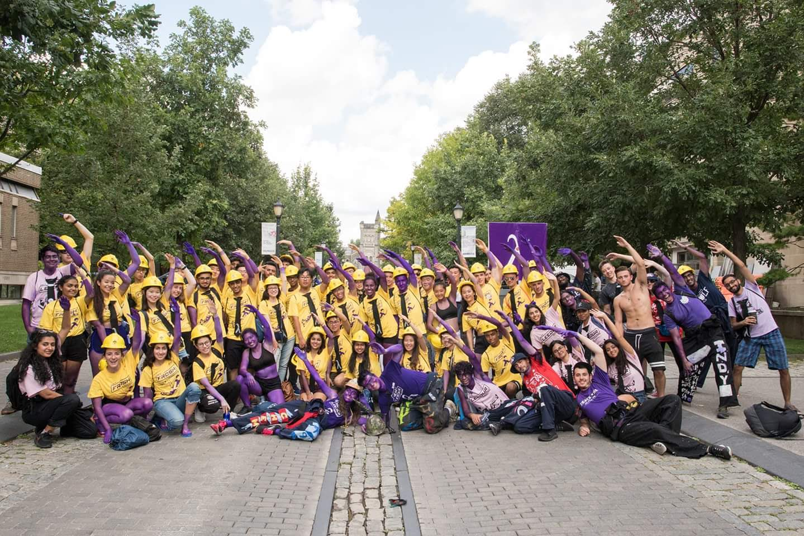

My name is Mingshi and I am currently a MaSc student working under Professor Tsotsos working to bridge the gap between computer and robotic vision and human vision. Previously, I graduated from the University of Toronto with a BASc in Engineering Science, Robotics major.
Ever since I was little, I remember answering the big "What do you want to be when you grow up?" question with "An inventor!". At the time, I didn't really know what that would entail. I just knew I really liked putting together mechanical toys and thinking of new ways to solve problems, and implementing them with my dad, a mechanical engineer.
Growing up, I spent a lot of time with my dad. My parents moved to Canada when I was 5 and my mom took on 3 jobs to try and support us while my dad obtained his PhD degree in hopes of getting a better job. And so, during summers and school vacations, my dad would bring me to his lab to watch movies or play with legos while he did his research. I would watch as he prototyped his mechanical designs with lego and I would watch as he would come up with the most creative solutions to solve problems in our home. This really impacted me and nurtured my creativity and belief that any problem is solvable, you might just need to be clever about it
Engineering
I accepted my offer for the Engineering Science program at UofT because I was indecisive on what I wanted to do and the program's first 2 general years appealed to that, and because I heard it was a challenge. And oh boy, was the latter accurate. Although the schedule and content was difficult, I'm glad I did it and I met some of my best friends there while gaining extremely valuable life lessions, insights on myself, and skills I would eventually apply in other aspects of my life.
I was introduced to the concept of machine learning in my first year and I was hooked. I thought the idea of a machine being able to process and learn from information was so cool! I promptly took some courses and volunteered at Professor Isaac Tamblyn's machine learning lab which focused on reinforcement learning. I was so excited about the possiblity of creating a system that could learn and form thoughts and opinions like a human child could from sensing the world around them like us.
Later, I joined a book club hosted by Professor Tamblyn which went over literature regarding the overall question of "What is Intelligence?". These few weeks were filled with philisophical debates on how intelligence is defined and how it should be defined. We discussed different forms of intelligence and tried to come to an agreement. It was so much fun!
Robotics
As I became more familiar with more aspects and fields of engineering, I became more and more interested in robotics. Something that could encompass my dream of one day creating a robot that can be raised and taught like a human child (I know this is spooky to some). In essence, I wanted to create a robot that could employ the same cognitive processes as humans so that they can be independent in problem solving and decision making.
My first exposure to robotics was through my dad with legos and a circuits toy he got me. Throughout my childhood I've always loved the idea of a small robot friend that could interact and play with you. The movies Wall-E and Robots were particular favourites of mine. I loved the way that each robot has their own personality and attitude about life. Those movies got me thinking about what it means to be an individual and how we could capture personality, and growth in a robot.
It was particularily shocking to me when I realised how advanced robotics already was. I saw videos of Asimo from Honda walking around on its own and doing very human-like tasks. I saw videos of Big Dog from Boston Dynamics running around and walking through various terrain. How exciting! How did they make those robots do that? What types of processes are going through their "brains"? Can they see and learn from the world like us?
This with my constant curiosity about general intelligence, how the brain worked, consiousness, and how humans learn, I was very much on my way into the robotics field where I am able to learn more about how to answer those questions I had when I was younger.